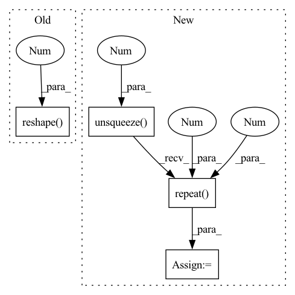

Pattern ID :4833
Before Change
break
mean_entity = mean_entity + entity
mean_entity = mean_entity / (real_number)
tensor_list.append(mean_entity.reshape( 1, -1 ) )
tensor_mean = torch.cat(tensor_list, dim=0)
print("tensor_mean:", tensor_mean) if debug else None
After Change
// mask for transformer need a special format
mask_seq_len = mask.shape[-1]
tran_mask = mask.unsqueeze(1 )
// tran_mask: [batch_seq_size x max_entities x max_entities]
tran_mask = tran_mask.repeat(1 , mask_seq_len, 1 )
// out: [batch_seq_size x entities_size x embeding_size]
out = self.transformer(x, mask=tran_mask)
In pattern: SUPERPATTERN
Frequency: 5
Non-data size: 4
Instances Fragment ID: 17050549
Project Name: liuruoze/mini-alphastar
Commit Name: 612d42a7bf5ef827e1e919198d839fce106155cd
Time: 2021-11-25
Author: liuruoze@163.com
File Name: alphastarmini/core/arch/entity_encoder.py
M Class Name: EntityEncoder
N Class Name: EntityEncoder
M Method Name: forward(3)
N Method Name: forward(2)
M Parent Class: nn.Module
N Parent Class: nn.Module
M File Name: alphastarmini/core/arch/entity_encoder.py
N File Name: alphastarmini/core/arch/entity_encoder.py
M Start Line: 721
M End Line: 758
N Start Line: 716
N End Line: 778
Before Change
insample_y = torch.cat(( insample_y, futr_exog.reshape(batch_size, windows_size, -1) ), dim=2)
if self.stat_exog_size > 0:
insample_y = torch.cat(( insample_y, stat_exog.reshape( batch_size, windows_size, -1 ) ), dim=2)
// RNN forward
insample_y, _ = self.rnn(insample_y)After Change
insample_y = torch.cat(( insample_y, futr_exog.reshape(batch_size, windows_size, -1) ), dim=2)
if self.stat_exog_size > 0:
stat_exog = stat_exog.unsqueeze(1).repeat(1 , windows_size, 1 ) // [B, C] -> [B, W, C]
insample_y = torch.cat(( insample_y, stat_exog ), dim=2)
// RNN forward Fragment ID: 17050550
Project Name: nixtla/neuralforecast
Commit Name: 47169185aa677e0ef62b6a1a1d81b57a2d40189b
Time: 2022-10-27
Author: mergenthaler.m@gmail.com
File Name: neuralforecast/models/rnn.py
M Class Name: RNN
N Class Name: RNN
M Method Name: forward(2)
N Method Name: forward(2)
M Parent Class: BaseRecurrent
N Parent Class: BaseRecurrent
M File Name: neuralforecast/models/rnn.py
N File Name: neuralforecast/models/rnn.py
M Start Line: 110
M End Line: 124
N Start Line: 110
N End Line: 125
Before Change
insample_y = torch.cat(( insample_y, futr_exog.reshape(batch_size, windows_size, -1) ), dim=2)
if self.stat_exog_size > 0:
insample_y = torch.cat(( insample_y, stat_exog.reshape( batch_size, windows_size, -1 ) ), dim=2)
// RNN forward
for layer_num in range(len(self.rnn_stack)):After Change
insample_y = torch.cat(( insample_y, futr_exog.reshape(batch_size, windows_size, -1) ), dim=2)
if self.stat_exog_size > 0:
stat_exog = stat_exog.unsqueeze(1).repeat(1 , windows_size, 1 ) // [B, C] -> [B, W, C]
insample_y = torch.cat(( insample_y, stat_exog ), dim=2)
// RNN forward Fragment ID: 17050544
Project Name: nixtla/neuralforecast
Commit Name: 47169185aa677e0ef62b6a1a1d81b57a2d40189b
Time: 2022-10-27
Author: mergenthaler.m@gmail.com
File Name: neuralforecast/models/dilated_rnn.py
M Class Name: DilatedRNN
N Class Name: DilatedRNN
M Method Name: forward(2)
N Method Name: forward(2)
M Parent Class: BaseRecurrent
N Parent Class: BaseRecurrent
M File Name: neuralforecast/models/dilated_rnn.py
N File Name: neuralforecast/models/dilated_rnn.py
M Start Line: 328
M End Line: 342
N Start Line: 328
N End Line: 343
Before Change
insample_y = torch.cat(( insample_y, futr_exog.reshape(batch_size, windows_size, -1) ), dim=2)
if self.stat_exog_size > 0:
insample_y = torch.cat(( insample_y, stat_exog.reshape( batch_size, windows_size, -1 ) ), dim=2)
// GRU forward
insample_y, _ = self.gru(insample_y)After Change
insample_y = torch.cat(( insample_y, futr_exog.reshape(batch_size, windows_size, -1) ), dim=2)
if self.stat_exog_size > 0:
stat_exog = stat_exog.unsqueeze(1).repeat(1 , windows_size, 1 ) // [B, C] -> [B, W, C]
insample_y = torch.cat(( insample_y, stat_exog ), dim=2)
// GRU forward Fragment ID: 17050545
Project Name: nixtla/neuralforecast
Commit Name: 47169185aa677e0ef62b6a1a1d81b57a2d40189b
Time: 2022-10-27
Author: mergenthaler.m@gmail.com
File Name: neuralforecast/models/gru.py
M Class Name: GRU
N Class Name: GRU
M Method Name: forward(2)
N Method Name: forward(2)
M Parent Class: BaseRecurrent
N Parent Class: BaseRecurrent
M File Name: neuralforecast/models/gru.py
N File Name: neuralforecast/models/gru.py
M Start Line: 109
M End Line: 123
N Start Line: 109
N End Line: 124
Before Change
insample_y = torch.cat(( insample_y, futr_exog.reshape(batch_size, windows_size, -1) ), dim=2)
if self.stat_exog_size > 0:
insample_y = torch.cat(( insample_y, stat_exog.reshape( batch_size, windows_size, -1 ) ), dim=2)
// LSTM forward
insample_y, _ = self.lstm(insample_y)After Change
insample_y = torch.cat(( insample_y, futr_exog.reshape(batch_size, windows_size, -1) ), dim=2)
if self.stat_exog_size > 0:
stat_exog = stat_exog.unsqueeze(1).repeat(1 , windows_size, 1 ) // [B, C] -> [B, W, C]
insample_y = torch.cat(( insample_y, stat_exog ), dim=2)
// LSTM forward Fragment ID: 17050546
Project Name: nixtla/neuralforecast
Commit Name: 47169185aa677e0ef62b6a1a1d81b57a2d40189b
Time: 2022-10-27
Author: mergenthaler.m@gmail.com
File Name: neuralforecast/models/lstm.py
M Class Name: LSTM
N Class Name: LSTM
M Method Name: forward(2)
N Method Name: forward(2)
M Parent Class: BaseRecurrent
N Parent Class: BaseRecurrent
M File Name: neuralforecast/models/lstm.py
N File Name: neuralforecast/models/lstm.py
M Start Line: 81
M End Line: 95
N Start Line: 81
N End Line: 96